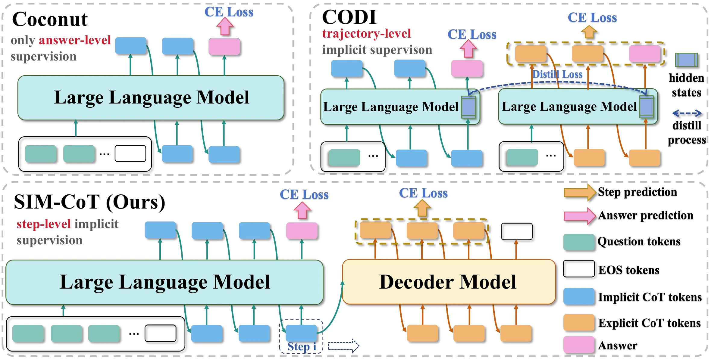

ICLR 2026
SIM-CoT
Supervised Implicit Chain-of-Thought
1Fudan University 2Shanghai AI Laboratory 3The Chinese University of Hong Kong 4Shanghai Innovation Institute
+8.2
points over Coconut
GPT-2 · GSM8k-Aug
+3.0
points over CODI
LLaMA 3.1 8B · GSM8k-Aug
2.3×
fewer tokens than explicit CoT, with 2.1 points higher accuracy
GPT-2 · GSM8k-Aug
0
added inference overhead
The decoder is used only in training
Abstract
Stable, scalable and interpretable implicit reasoning.
Implicit Chain-of-Thought (CoT) methods offer a token-efficient alternative to explicit CoT reasoning in Large Language Models (LLMs), but a persistent performance gap has limited their adoption. We identify a core latent instability issue when scaling the computational budget of implicit CoT: as the number of reasoning tokens increases, training often becomes unstable and collapses. Our analysis shows that this instability arises from latent representations becoming homogeneous and losing semantic diversity, caused by insufficient step-level supervision in current implicit CoT methods. To address this, we propose SIM-CoT, a plug-and-play training module that introduces step-level supervision to stabilize and enrich the latent reasoning space. SIM-CoT employs an auxiliary decoder during training to align each implicit token with its corresponding explicit reasoning step, ensuring latent states capture distinct and meaningful information. The auxiliary decoder is removed at inference, preserving the efficiency of implicit CoT with no added overhead. It also provides interpretability by projecting each latent token onto an explicit reasoning vocabulary, enabling per-step visualization and diagnosis. SIM-CoT significantly improves both in-domain accuracy and out-of-domain stability of implicit CoT methods, boosting Coconut by +8.2% on GPT-2 and CODI by +3.0% on LLaMA-3.1 8B. It further surpasses the explicit CoT baseline on GPT-2 by 2.1% with 2.3× greater token efficiency, while closing the performance gap on larger models like LLaMA-3.1 8B.
The problem
More latents should help. Instead, training collapses.
Explicit CoT gets better with more reasoning tokens, so the natural move for implicit CoT is to add latents. With Coconut, accuracy rises from one to four latents, then collapses to 12.5% at five. The collapsed latents become nearly identical, drift away from the vocabulary embedding space and lose operator information.

Accuracy collapses
Accuracy improves up to four latents. With five it drops to 12.5% and keeps swinging.
Operators disappear
Operator accuracy of the decoded latents falls from 83.0 to 4.7 in the failed five-latent model.
Latents converge
Pairwise latent distance falls to 4.21, far below any healthy setting (20.30–28.34), and distance to the vocabulary center rises to 39.39.
Latents say the same thing
Both latents of a failed model decode mostly to numbers. A normal model keeps operators in its second latent.
Method
Supervise every latent step.
Coconut supervises only the answer, and CODI distills a whole trajectory. Neither tells the model which latent should encode which step. SIM-CoT adds an auxiliary decoder during training that must generate the k-th reasoning step from the k-th latent alone.


Answer-level
Coconut
Cross-entropy on the final answer only. The intermediate latents are left weakly constrained.
Trajectory-level
CODI
Distills from an explicit-CoT teacher by aligning hidden states of the full reasoning trajectory.
Step-level
SIM-CoT
Aligns each latent with its own reasoning step through the auxiliary decoder, so every latent carries one step.
Latents
zk=Hθ(U(k−1)), U(k)=U(k−1)⊕zk
For K fixed steps, the last hidden state is fed back as the next input.
Step supervision
ℒstep=−∑k,t log pφ(yk,t | zk, yk,<t)
The decoder sees only zk and must generate step sk.
Objective
ℒ=λstepℒstep+λlmℒans-lm
Step gradients flow through z1:K into the LLM.
At inference the decoder is removed. The model runs its K latent steps and decodes the answer directly, so decoding takes T + K + La positions, the same as the implicit method it is added to.
Results
Consistent gains on every backbone.
Added to Coconut or CODI, SIM-CoT raises GSM8k-Aug accuracy on GPT-2 and on LLaMA 3 models from 1B to 8B without adding tokens. On GPT-2 it is the first training-based implicit method to surpass explicit CoT.
Trained on GSM8k-Aug. In-domain: GSM8k-Aug test set. Out-of-domain: GSM-Hard, MultiArith and SVAMP.
| Method | In-domain | Out-of-domain | |||||
|---|---|---|---|---|---|---|---|
| Method | GSM8k-Aug | Tokens | GSM-Hard | MultiArith | SVAMP | Average | Tokens |
| SFT-CoT explicit | 42.7 | 27.6 | 9.0 | 85.0 | 41.6 | 45.2 | 24.7 |
| No-CoT | 19.1 | 2.2 | 4.3 | 41.1 | 16.4 | 20.6 | 1.4 |
| iCoT | 30.1 | 2.2 | 5.7 | 55.5 | 29.4 | 30.2 | 1.4 |
| Coconut | 36.6 | 12.2 | 8.1 | 83.5 | 36.2 | 42.6 | 11.4 |
| + SIM-CoT | 44.8+8.2 | 12.2 | 9.3 | 90.8 | 40.7 | 46.9+4.3 | 11.4 |
| CODI | 42.0 | 12.2 | 9.4 | 93.0 | 41.7 | 48.0 | 12.6 |
| + SIM-CoT | 42.6+0.6 | 12.2 | 9.4 | 92.8 | 42.6 | 48.3+0.3 | 12.6 |
| Method | In-domain | Out-of-domain | |||||
|---|---|---|---|---|---|---|---|
| Method | GSM8k-Aug | Tokens | GSM-Hard | MultiArith | SVAMP | Average | Tokens |
| SFT-CoT explicit | 58.4 | 25.3 | 13.9 | 96.7 | 65.7 | 58.8 | 23.1 |
| No-CoT | 28.8 | 1.2 | 6.3 | 50.3 | 26.7 | 27.8 | 1.9 |
| iCoT | 19.0 | 1.2 | 4.4 | 39.0 | 40.9 | 28.1 | 1.9 |
| Coconut | 33.2 | 13.2 | 7.0 | 63.3 | 43.7 | 38.0 | 11.9 |
| + SIM-CoT | 42.2+9.0 | 13.2 | 9.3 | 87.7 | 43.9 | 47.0+9.0 | 11.9 |
| CODI | 52.7 | 13.2 | 11.9 | 95.0 | 60.6 | 55.8 | 13.4 |
| + SIM-CoT | 56.1+3.4 | 13.2 | 12.7 | 96.2 | 61.5 | 56.8+1.0 | 13.4 |
| Method | In-domain | Out-of-domain | |||||
|---|---|---|---|---|---|---|---|
| Method | GSM8k-Aug | Tokens | GSM-Hard | MultiArith | SVAMP | Average | Tokens |
| SFT-CoT explicit | 71.5 | 27.7 | 17.0 | 98.3 | 71.0 | 62.1 | 22.4 |
| No-CoT | 38.3 | 1.2 | 9.5 | 88.7 | 52.9 | 50.4 | 1.4 |
| CODI | 60.8 | 7.2 | 14.3 | 98.7 | 73.3 | 62.1 | 7.5 |
| + SIM-CoT | 62.3+1.5 | 7.2 | 14.6 | 98.8 | 74.9 | 62.8+0.7 | 7.5 |
| Method | In-domain | Out-of-domain | |||||
|---|---|---|---|---|---|---|---|
| Method | GSM8k-Aug | Tokens | GSM-Hard | MultiArith | SVAMP | Average | Tokens |
| SFT-CoT explicit | 71.7 | 27.4 | 16.5 | 98.3 | 73.1 | 62.6 | 22.2 |
| No-CoT | 39.5 | 1.2 | 9.8 | 88.0 | 55.3 | 51.0 | 1.6 |
| CODI | 61.1 | 7.2 | 15.5 | 99.5 | 78.1 | 64.4 | 7.5 |
| + SIM-CoT | 64.1+3.0 | 7.2 | 16.3 | 100.0 | 79.4 | 65.2+0.8 | 7.5 |
More latents, no collapse.
Coconut and SIM-CoT on GPT-2 as the number of latents grows. Each latent spans two implicit tokens.
Interpretability
Read every latent.
Each latent is trained to carry one step, so the training decoder can translate latents back into text. On these GSM8k problems the decoded steps form a chain that ends at the correct answer.
Distinct, but still grounded.
SIM-CoT pushes latents further apart than any setting without step supervision, while keeping them near the vocabulary embedding space.

Citation
BibTeX
@inproceedings{wei2025simcot,
title={{SIM-COT}: Supervised Implicit Chain-of-Thought},
author={Wei, Xilin and Liu, Xiaoran and Zang, Yuhang and Dong, Xiaoyi and Cao, Yuhang and Wang, Jiaqi and Qiu, Xipeng and Lin, Dahua},
booktitle={International Conference on Learning Representations},
year={2026}
}